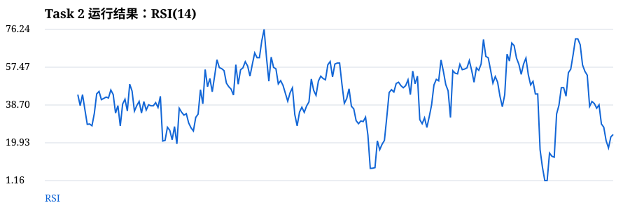
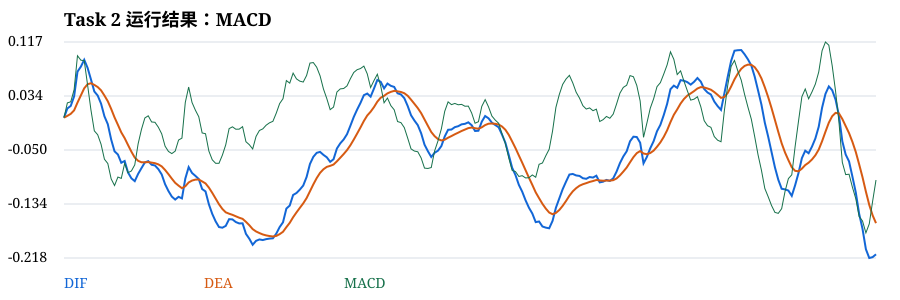
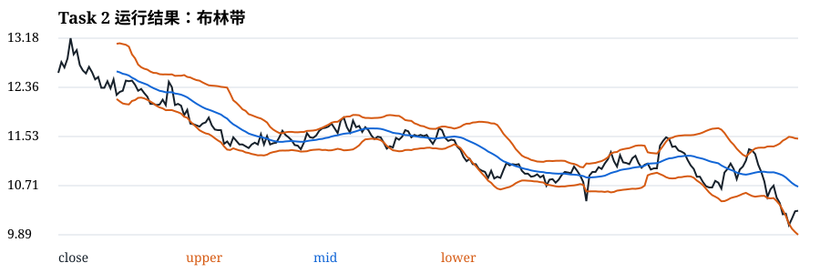
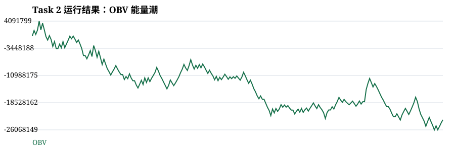

Task 2：数据诊断与技术指标
1. 数据基础诊断分析
本页面默认读取 Task 1 生成的真实 CSV：data/task1_daily_data.csv。也可以上传其他真实 CSV。对数据进行全面的诊断分析，包括以下内容：
点击下方按钮加载并诊断数据。
1.1 加载和检查数据
代码：加载数据
import pandas as pd
# 加载数据
df = pd.read_csv('task1_daily_data.csv')
df = df.sort_values('trade_date').reset_index(drop=True)
print('数据前5行：')
print(df.head())运行结果：
数据加载中...
1.2 检查缺失值
代码：缺失值检查
print('各字段缺失值数量：')
print(df.isna().sum())运行结果：
结果加载中...
1.3 数据基本信息
代码：数据基本信息
print(f'数据行数：{len(df)}')
print(f'数据列数：{len(df.columns)}')
print(f'起始日期：{df["trade_date"].min()}')
print(f'结束日期：{df["trade_date"].max()}')
print(f'时间跨度：{(pd.to_datetime(df["trade_date"]).max() - pd.to_datetime(df["trade_date"]).min()).days} 天')运行结果：
结果加载中...
1.4 描述性统计量
代码：描述性统计
print('描述性统计量：')
print(df.describe())运行结果：
结果加载中...
1.5 价格涨跌幅分析
代码：涨跌幅分析
df['price_change'] = df['close'].pct_change() * 100
print('涨跌幅统计：')
print(f'平均日涨跌幅：{df["price_change"].mean():.4f}%')
print(f'涨跌幅标准差：{df["price_change"].std():.4f}%')
print(f'最大日涨幅：{df["price_change"].max():.4f}%')
print(f'最大日跌幅：{df["price_change"].min():.4f}%')运行结果：
结果加载中...
2. RSI、MACD、布林带的计算方法和作用
2.1 RSI（相对强弱指标）
定义：RSI（Relative Strength Index，相对强弱指标）是由 Welles Wilder 于 1978 年提出的动量指标，用于衡量价格变动的速度和变化。
计算方法：
- 计算每日价格变化：Δ = 当日收盘价 - 前一日收盘价
- 计算平均涨幅（Gain）和平均跌幅（Loss）：使用 N 日（通常为 14 日）滚动平均
- 计算相对强弱 RS = 平均涨幅 / 平均跌幅
- 计算 RSI = 100 - 100 / (1 + RS)
作用：
- 超买超卖信号：RSI > 70 视为超买，可能回调；RSI < 30 视为超卖，可能反弹
- 背离信号：价格创新高但 RSI 未创新高（顶背离），或价格创新低但 RSI 未创新低（底背离）
- 趋势判断：RSI 在 50 以上表明上涨趋势，50 以下表明下跌趋势
2.2 MACD（指数平滑异同移动平均线）
定义：MACD（Moving Average Convergence Divergence）是由 Gerald Appel 于 1979 年提出的趋势跟踪指标，通过计算两条移动平均线的差离值来判断趋势。
计算方法：
- 计算短期 EMA（通常为 12 日指数移动平均）
- 计算长期 EMA（通常为 26 日指数移动平均）
- 计算 DIF（差离值）= EMA(12) - EMA(26)
- 计算 DEA（信号线）= EMA(DIF, 9)，即 DIF 的 9 日指数移动平均
- 计算 MACD 柱状图 = 2 × (DIF - DEA)
作用：
- 金叉信号：DIF 从下向上突破 DEA，为买入信号
- 死叉信号：DIF 从上向下突破 DEA，为卖出信号
- 趋势判断：DIF 和 DEA 均在零轴上方，表明上涨趋势；均在零轴下方，表明下跌趋势
- 柱状图变化：柱状图由负转正或由正转负，表明动量的变化
2.3 布林带（Bollinger Bands）
定义：布林带由 John Bollinger 于 1980 年代提出，是一种基于统计标准差的 volatility 指标，由三条线组成：中轨、上轨和下轨。
计算方法：
- 计算中轨：N 日简单移动平均线（通常 N = 20）
- 计算标准差：N 日收盘价的标准差
- 计算上轨 = 中轨 + 2 × 标准差
- 计算下轨 = 中轨 - 2 × 标准差
作用：
- 波动区间：布林带宽度表示市场波动大小，带宽收窄表示波动减小，带宽扩大表示波动增大
- 支撑阻力：上轨通常作为阻力位，下轨通常作为支撑位
- 超买超卖：价格触及上轨可能超买，触及下轨可能超卖
- 趋势判断：价格在中轨上方运行表明上涨趋势，在中轨下方运行表明下跌趋势
3. Python 加载数据、计算指标并可视化
task2 Python 代码
import pandas as pd
import numpy as np
import matplotlib.pyplot as plt
from datetime import datetime
# 设置中文字体
plt.rcParams['font.sans-serif'] = ['SimSun']
plt.rcParams['axes.unicode_minus'] = False
# 加载数据
df = pd.read_csv('task1_daily_data.csv')
df = df.sort_values('trade_date').reset_index(drop=True)
# 将交易日期转换为日期格式
df['trade_date'] = pd.to_datetime(df['trade_date'], format='%Y%m%d')
print('='*80)
print('数据基础诊断分析')
print('='*80)
# 1. 检查缺失值
print('\n【1. 缺失值检查】')
print(df.isna().sum())
# 2. 数据基本信息
print('\n【2. 数据基本信息】')
print(f'数据行数：{len(df)}')
print(f'数据列数：{len(df.columns)}')
print(f'起始日期：{df["trade_date"].min()}')
print(f'结束日期：{df["trade_date"].max()}')
print(f'时间跨度：{(df["trade_date"].max() - df["trade_date"].min()).days} 天')
# 3. 描述性统计量
print('\n【3. 描述性统计量】')
print(df.describe())
# 4. 价格涨跌幅分析
df['price_change'] = df['close'].pct_change() * 100
print('\n【4. 价格涨跌幅统计】')
print(f'平均日涨跌幅：{df["price_change"].mean():.4f}%')
print(f'涨跌幅标准差：{df["price_change"].std():.4f}%')
print(f'最大日涨幅：{df["price_change"].max():.4f}%')
print(f'最大日跌幅：{df["price_change"].min():.4f}%')
# 计算技术指标
close = df['close']
# 计算 RSI（14日）
delta = close.diff()
gain = delta.clip(lower=0).rolling(14).mean()
loss = (-delta.clip(upper=0)).rolling(14).mean()
df['RSI'] = 100 - 100 / (1 + gain / loss)
# 计算 MACD
ema12 = close.ewm(span=12, adjust=False).mean()
ema26 = close.ewm(span=26, adjust=False).mean()
df['DIF'] = ema12 - ema26
df['DEA'] = df['DIF'].ewm(span=9, adjust=False).mean()
df['MACD'] = 2 * (df['DIF'] - df['DEA'])
# 计算布林带（20日，2倍标准差）
df['BOLL_MID'] = close.rolling(20).mean()
df['BOLL_STD'] = close.rolling(20).std()
df['BOLL_UPPER'] = df['BOLL_MID'] + 2 * df['BOLL_STD']
df['BOLL_LOWER'] = df['BOLL_MID'] - 2 * df['BOLL_STD']
# 计算 OBV
direction = close.diff().apply(lambda x: 1 if x > 0 else (-1 if x < 0 else 0))
df['OBV'] = (direction * df['vol']).fillna(0).cumsum()
print(df.isna().sum())
print(df.describe())
df[['close', 'BOLL_UPPER', 'BOLL_MID', 'BOLL_LOWER']].plot(figsize=(12, 5), title='布林带')
plt.show()
df[['RSI']].plot(figsize=(12, 3), title='RSI')
plt.show()
df[['DIF', 'DEA', 'MACD']].plot(figsize=(12, 4), title='MACD')
plt.show()
df[['OBV']].plot(figsize=(12, 3), title='OBV 能量潮')
plt.show()4. 扩展指标：OBV（能量潮）
定义：OBV（On Balance Volume，能量潮）是由 Joseph Granville 于 1963 年提出的技术分析指标，将成交量与价格变动相结合，用于衡量资金流向。
计算方法：
- 当日收盘价 > 前一日收盘价：OBV = 前一日 OBV + 当日成交量
- 当日收盘价 < 前一日收盘价：OBV = 前一日 OBV - 当日成交量
- 当日收盘价 = 前一日收盘价：OBV = 前一日 OBV
作用：
- 确认趋势：OBV 与价格同向变动时，趋势得到确认
- 背离信号：价格创新高但 OBV 未创新高（顶背离），或价格创新低但 OBV 未创新低（底背离），预示趋势可能反转
- 资金流向：OBV 上升表明资金流入，OBV 下降表明资金流出
- 突破确认：价格突破时 OBV 也同步突破，确认突破有效
5. 本次 Python 运行结果
以下图形和统计值由真实 Tushare CSV 计算后生成，并随页面部署。
| 股票代码 | 加载中 | 数据行数 | 加载中 |
|---|---|---|---|
| 收盘均值 | 加载中 | 收盘标准差 | 加载中 |
| 最新 RSI | 加载中 | 最新 MACD | 加载中 |
图 3 平安银行（000001.SZ）14日 RSI 相对强弱指标

解读：RSI 指标用于衡量价格动量的强弱。图中红色虚线为超买线（70），绿色虚线为超卖线（30）。当 RSI 超过 70 时，表明股票可能超买，存在回调风险；当 RSI 低于 30 时，表明股票可能超卖，存在反弹机会。RSI 在 50 上方运行表明整体趋势偏强，在 50 下方运行表明整体趋势偏弱。
图 4 平安银行（000001.SZ）MACD 指数平滑异同移动平均线

解读：MACD 指标由 DIF（快线）、DEA（慢线）和柱状图组成。当 DIF 从下方向上突破 DEA 时形成"金叉"，为买入信号；当 DIF 从上方向下突破 DEA 时形成"死叉"，为卖出信号。DIF 和 DEA 在零轴上方表明上涨趋势，在零轴下方表明下跌趋势。柱状图的正负和大小反映了动量的变化。
图 5 平安银行（000001.SZ）布林带（20日，2倍标准差）

解读：布林带由上轨（红色）、中轨（蓝色）和下轨（绿色）组成。中轨为 20 日均线，上轨和下轨分别是中轨加减 2 倍标准差。价格触及上轨表明可能超买，触及下轨表明可能超卖。布林带带宽收窄表明市场波动性降低，往往预示着即将出现较大的行情突破；带宽扩大表明市场波动性增大。价格在中轨上方运行表明短期趋势偏强，在中轨下方运行表明短期趋势偏弱。
图 6 平安银行（000001.SZ）OBV 能量潮指标

解读：OBV 指标通过累加成交量来衡量资金流向。当股价上涨时，OBV 上升表明资金流入；当股价下跌时，OBV 下降表明资金流出。OBV 与价格同向变动时，趋势得到确认；若出现背离（价格创新高但 OBV 未创新高，或价格创新低但 OBV 未创新低），往往预示着趋势可能反转。OBV 的持续上升表明买盘力量强劲，持续下降表明卖盘力量强劲。
图 7 平安银行（000001.SZ）实时计算 RSI 指标（Canvas 图）
解读：该 Canvas 图表由 JavaScript 实时计算并绘制 RSI 指标。RSI 曲线能够清晰地展示价格动量的变化，帮助判断当前市场处于超买还是超卖状态。
图 8 平安银行（000001.SZ）实时计算 MACD 指标（Canvas 图）
解读：该 Canvas 图表由 JavaScript 实时计算并绘制 MACD 指标。图中展示了 DIF、DEA 和柱状图三个组成部分，能够直观地观察到金叉、死叉和动量变化等信号。
图 9 平安银行（000001.SZ）实时计算布林带（Canvas 图）
解读：该 Canvas 图表由 JavaScript 实时计算并绘制布林带。可以清晰地观察到价格在布林带上下轨之间的波动，以及布林带带宽的变化，从而判断市场波动性和可能的突破机会。
图 10 平安银行（000001.SZ）实时计算 OBV 指标（Canvas 图）
解读：该 Canvas 图表由 JavaScript 实时计算并绘制 OBV 指标。OBV 的变化趋势能够反映资金的流入流出情况，帮助判断价格走势的可靠性。